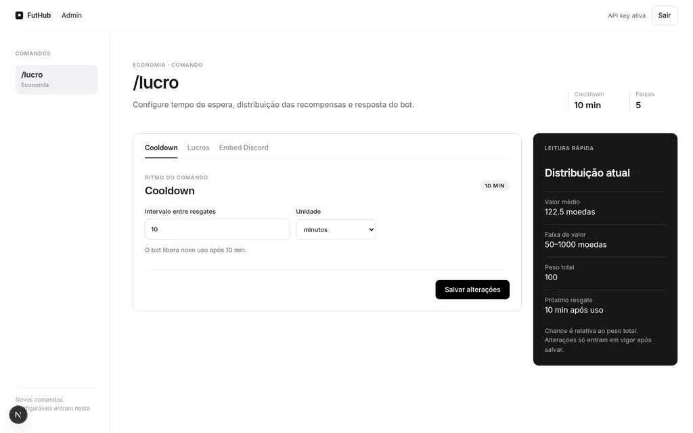
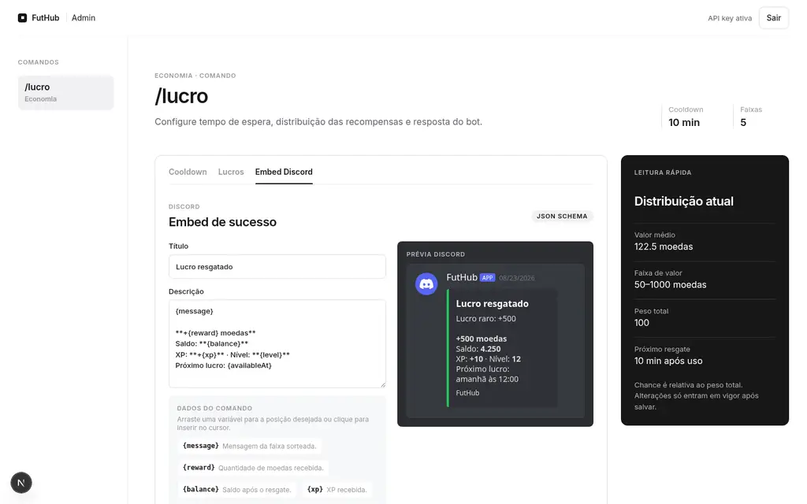

01
Cards e elencos
Monte elenco com cards conquistados, comprados ou vendidos na economia do jogo.
Open source · futebol · Discord
FutHub transforma comunidade em jogo. Crie elenco, abra packs, dispute partidas e acompanhe evolução pelo Discord.
Ambiente local conectado à sua comunidade.
Partidas recentes
Estado
API onlineFila ranqueada pronta para novo adversário.
Servidor
✓ migrations applied
✓ API listening :3000
↳ /v1/ranked/queueUma base para comunidade
Regras de jogo na API, comandos no Discord e uma base TypeScript feita para quem quer contribuir.
Monte elenco com cards conquistados, comprados ou vendidos na economia do jogo.
Packs concedem cards, XP e recompensas. Regras permanecem claras e configuráveis.
Entre na fila, encontre adversário e acompanhe placar, pontos e divisão.
Objetivos recorrentes dão direção para jogar e novas razões para voltar.
A comunidade joga no canal onde já conversa, sem instalar outro cliente.
Fastify, Nestia e TypeScript mantêm contrato público entre bot, API e integrações.
Antes de rodar
FutHub usa Docker para banco e aplicações. Dependências JavaScript são instaladas dentro do container na primeira execução.
Clone repositório com Git instalado.
Instale Node.js. Ele fornece Corepack para usar pnpm 10.6.5.
Instale e deixe Docker Desktop em execução.
Instale Tilt para subir, observar e parar stack local.
Ambiente local
Docker e Tilt cuidam da infraestrutura. Você muda código e acompanha API, banco e bot no mesmo ambiente.
Instale Docker, Tilt, Node.js 22 e habilite Corepack.
Tilt cria ambiente local, inicia PostgreSQL e aplica migrations.
Preencha credenciais Discord, teste fluxo e envie melhoria pequena.
# clone repositório git clone https://github.com/victorgabrieldeon/futhub.git cd futhub # suba ambiente local corepack enable pnpm dev:tilt # descubra URL da API docker compose -f docker-compose.yml \ -f docker-compose.tilt.yml port api 3000 # valide antes do PR pnpm check
Windows
Use PowerShell. Este projeto usa Docker Compose pelo Tilt; não precisa habilitar Kubernetes no Docker Desktop.
PATH.git, node, docker e tilt respondem no PowerShell.# PowerShell git clone https://github.com/victorgabrieldeon/futhub.git cd futhub corepack enable pnpm dev:tilt # API em porta livre no host docker compose -f docker-compose.yml -f docker-compose.tilt.yml port api 3000 # encerre ambiente pnpm dev:tilt:down
Novo painel administrativo
/lucro sem editar banco ou código.O FutHub Admin concentra regras da economia e resposta do bot em uma sessão autorizada por API key, mantida em cookie HTTP-only.
Escolha intervalo em segundos, minutos ou horas. Painel converte valor para segundos, mostra resumo do próximo resgate e exige tempo inteiro acima de zero.
Defina valor, peso e mensagem em português, espanhol e inglês para cada faixa. Chance exibida é relativa à soma dos pesos e configuração exige pelo menos uma faixa.
Edite título, descrição, cor e rodapé. Variáveis de recompensa, saldo, XP, nível e próximo uso entram no cursor e prévia mostra mensagem antes de salvar.


Mudanças recentes
Registro curto das entregas mais recentes. Cada item aponta para commit correspondente no GitHub.
Guia de instalação, contribuição, segurança e templates de issues agora acompanham página pública do projeto.
Ver commit ↗API ganhou comandos para criar módulos e casos de uso. Contrato OpenAPI e cliente TypeScript seguem gerados juntos.
Ver commit ↗Bot passou a cobrir missões, liga, fila ranqueada, packs e mercado de cartas com identidade de jogador persistida.
Ver commit ↗Roadmap público
Não há promessa de prazo. Bugs, feedback e contribuições podem alterar a ordem das prioridades.
Construído em público
Roadmap, bugs e ideias ficam abertos. Cada contribuição pode melhorar experiência de quem joga e de quem mantém FutHub.